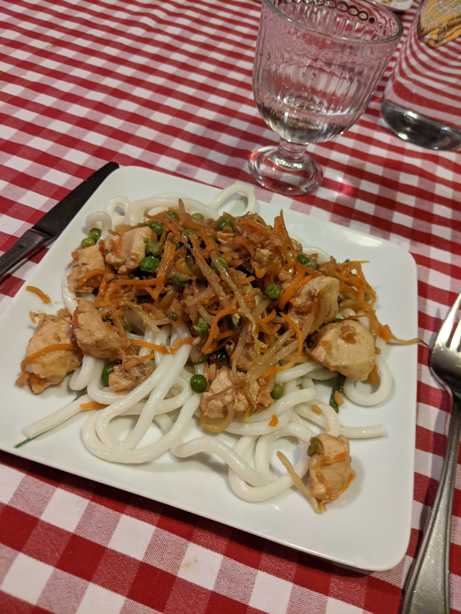

Recette proposée par
Corentin
Dans une poêle à grand bords (style wok), faites chauffer l'huile de sésame.
Lorsque l'huile est
chaude,
ajoutez les morceaux de poulet et laissez dorer.
Ajoutez ensuite les légumes ainsi que les cacahuètes et mélangez avec le poulet.
Ne pas couvrir
la
poêle pour éviter que les légumes se ramolissent.
Pendant que les légumes cuisent, faites cuire vos nouilles ou votre riz dans une autre casserole.
Ajoutez ensuite les nouilles ou le riz égoutté dans le wok et mélangez bien. Rajoutez enfin la sauce soja
et
continuez de mélanger.
Goûtez la préparation pour pouvoir doser le sel.
Bon appétit !

Delphine Rochon
ça me rappelle des souvenirs de voyage tout ça...